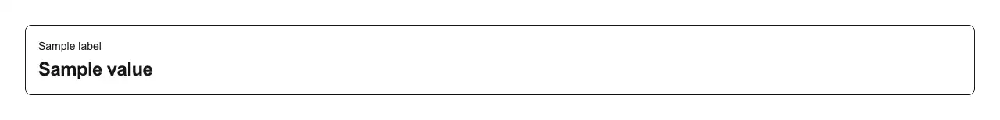

The single-number tile at the top of a dashboard: a label, one big value, and an optional percentage change with an up or down arrow — green when the number moved the right way, red when it did not. Use it wherever a screen opens with a row of headline figures: an analytics or metrics dashboard, an admin overview, a KPI or scorecard row, a billing and usage summary, a SaaS home screen, a revenue or traffic report. Common asks it answers: "stat card", "metric card", "KPI card", "metric tile", "summary card", "big number card", "dashboard stat tile", "stats card react", "shadcn dashboard cards", "tailwind stat card", "number card with percentage change", "card with trend indicator", "percentage change badge", "revenue card with trend arrow", "analytics summary cards", "stats row", "show total users with growth", "MRR / ARR card", "active users card", "conversion rate card", "Next.js dashboard stats", "Stripe/Vercel-style dashboard tiles". shadcn/ui ships card as an empty container with no notion of a metric, so the value typography, the delta colouring and the arrow are hand-rolled on every dashboard. Pass `label`, `value` and optionally `delta` (a number: positive renders the up arrow, negative the down arrow, and omitting it renders no delta at all) plus a `hint` line for the comparison period, e.g. "vs. last month". `value` is a ReactNode, not a string, so a pre-formatted currency or an Intl.NumberFormat result drops straight in and the component never guesses at your locale or currency. The direction is not left to colour alone: the arrow is aria-hidden and an sr-only "Up"/"Down" is spoken before the number, so the tile still means something to a screen reader and to a red-green colour-blind reader, which a bare green percentage does not. Composes into a responsive grid to form the stats row, and pairs with gauge and progress-ring when the figure is a ratio rather than a total. Styled with shadcn tokens (card, muted-foreground) with an explicit dark-mode pair for the delta colours; lucide-react is the only dependency. One thing it deliberately does not decide for you: `delta` is read as "up is good", so a positive number is always green. For a metric where rising is bad — churn, bounce rate, error rate, p95 latency, refunds, open incidents, cost per acquisition — pass the change negated (a 2-point rise in churn as `-2`) or wrap the card, rather than expecting it to know which way your metric should move. Distinct from feature-card, which sells a capability with an icon and copy: this one carries a live number.

Rendered on the shadcn default neutral palette with harness-generated props.
pnpm dlx shadcn@4.21.0 add @pulld/stat-card
| licence | POINTER |
|---|---|
| primitive base | none |
| type | registry:ui |
| files | src/components/ui/stat-card.tsx |
| npm deps pulled | none beyond the pre-installed peer set |
| registry deps | — |
| semantic / palette / hex | 3 / 4 / 0 |
| writes shared ui/ | yes — can overwrite the project’s own primitives |